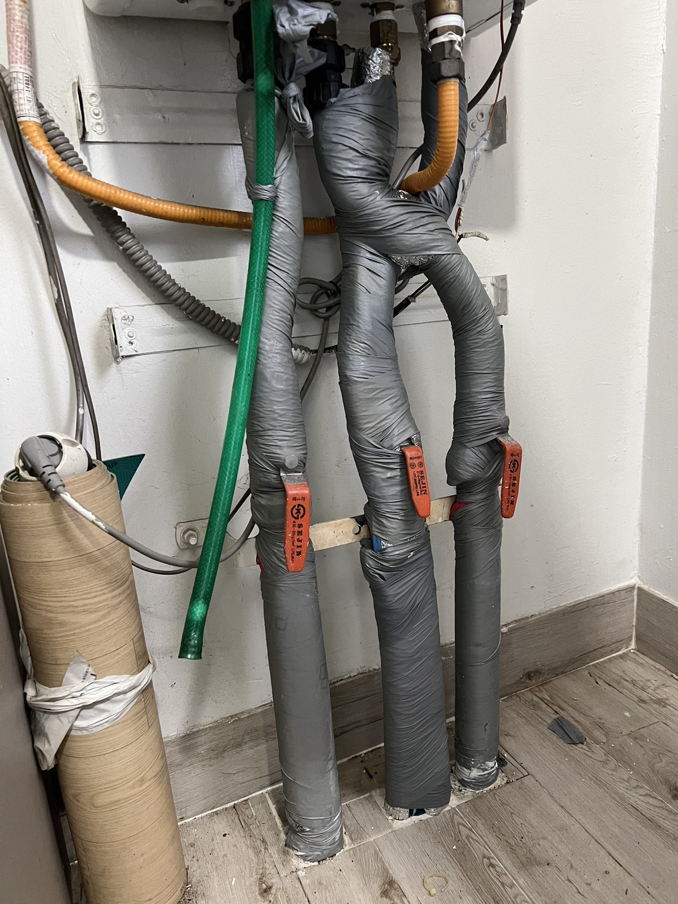
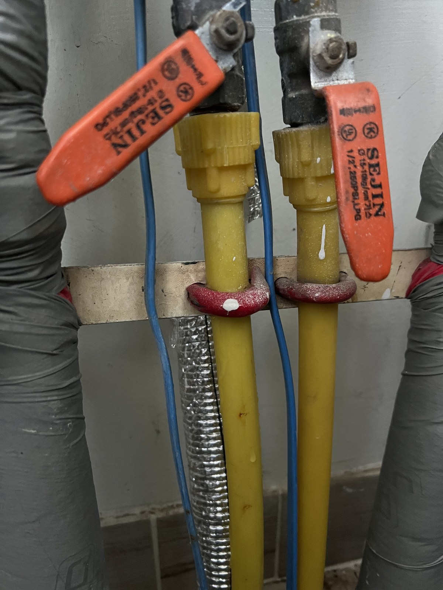
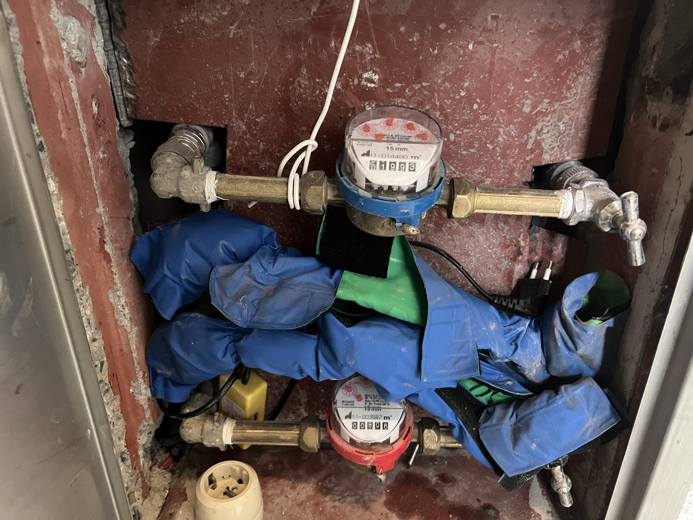
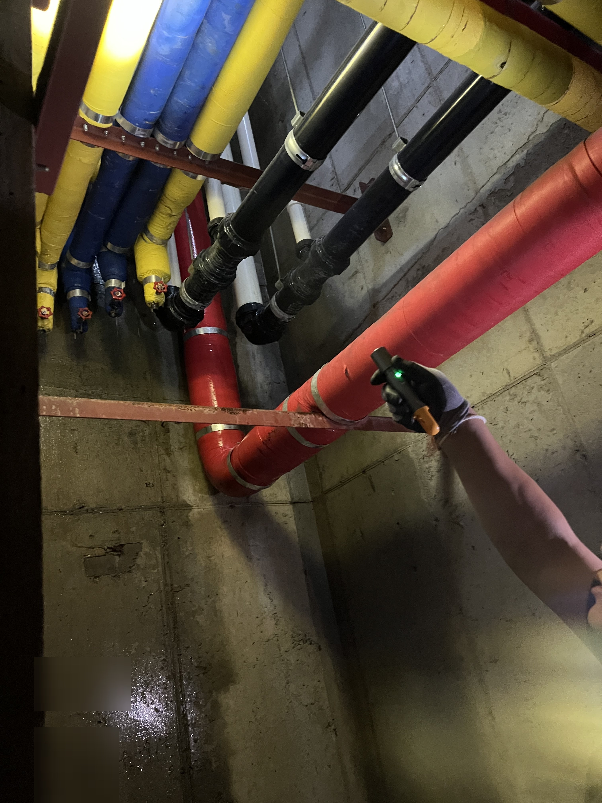

11월 동파 예방｜대전 아파트에서 실제로 터지는 베란다 수도·보일러 배관 자리 4곳

배관은 얼어서 터진 뒤 녹을 때 물이 쏟아집니다. 대전 아파트에서 겨울마다 실제로 문제가 되는 자리 네 곳과, 첫 한파 전 11월에 집에서 할 수 있는 점검·대처 순서를 정리했습니다.
왜 11월에 봐야 하나
해마다 다르지만 대전은 11월 중순을 지나면 아침 기온이 영하로 내려가는 날이 생깁니다. 배관은 얼어 있는 동안이 아니라 터진 뒤 녹을 때 물이 쏟아지기 때문에, 춥기 전인 11월 초가 점검하기 가장 좋은 때입니다.
겨울이면 "베란다 수도가 안 나와요", "보일러 밑에서 물이 떨어져요" 하는 연락을 가장 많이 받습니다. 아파트에서 실제로 터지는 자리는 거의 정해져 있어서, 그 자리만 보면 됩니다.
1. 베란다 세탁기 수전·외부 수도꼭지
확장하지 않은 베란다, 특히 북쪽 베란다의 세탁기 수전이 1순위입니다. 창을 닫아도 베란다는 실내보다 훨씬 춥습니다.
한파 예보가 있으면 수전 밸브를 잠그고 꼭지를 열어 물을 빼 두고, 세탁기 급수 호스는 분리해 물을 비워 두세요. 수전과 호스를 헌 수건이나 보온재로 감싸는 것만으로도 차이가 큽니다.
2. 보일러 아래 배관
베란다에 놓인 보일러는 본체보다 아래쪽 배관이 먼저 얼기 쉽습니다. 급수관과 난방 연결부의 보온재가 벗겨지거나 눌려 있지 않은지 보세요.
집을 비울 때는 보일러를 끄지 말고 '외출' 모드로 두어 물이 조금씩 돌게 하는 것이 기본입니다. 콘덴싱 보일러는 응축수 배출 호스가 얼어 보일러가 멈추기도 하니 호스 끝이 바깥에 노출돼 있는지도 확인하세요.

3. 복도 쪽 수도계량기함
계단실이나 복도에 있는 계량기함은 찬바람이 그대로 지나갑니다. 함 안에 헌옷이나 보온재를 채우고 뚜껑을 꼭 닫아 두세요.
계량기가 얼어 깨지면 교체 비용이 세대 부담인 경우가 많아(지자체·관리규약에 따라 다릅니다) 미리 막는 편이 훨씬 쌉니다.

4. 실외기실·확장 베란다의 노출 배관
베란다를 확장하면서 외벽 가까이까지 나간 배관, 실외기실을 지나는 배관은 보온재가 몇 년 지나면 삭습니다. 손으로 눌렀을 때 바스러지면 갈아 줄 때입니다.
얼었을 때는 이렇게
수도가 안 나온다고 토치나 뜨거운 물을 바로 붓지 마세요. 배관이 갈라지거나 연결부가 벌어집니다. 밸브를 잠근 뒤 미지근한 물을 적신 수건이나 드라이기 약한 바람으로 천천히 녹이고, 녹은 뒤 연결부에 물이 비치면 그때 연락 주세요.
이미 터져서 물이 나오면 계량기함의 세대 밸브부터 잠그는 것이 먼저입니다.

보온은 겨울 대비의 시작입니다
올가을 선비마을아파트와 평화로운아파트에서 배관을 교체한 뒤 보온재로 마감한 것도 겨울을 앞두고 연결부를 드러내 두지 않기 위해서입니다. 두 현장의 작업 범위는 아래 관련 글에서 사진으로 볼 수 있습니다.
점검만 받고 싶으셔도 괜찮습니다. 베란다 수전, 보일러 아래, 계량기함 사진 세 장을 보내 주시면 보온 보강이 필요한 자리부터 짚어 드립니다. 교체가 필요하면 범위와 비용은 자재·범위에 따라 달라 상담 후 안내드립니다.